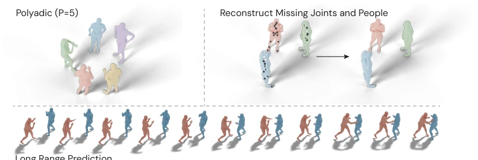
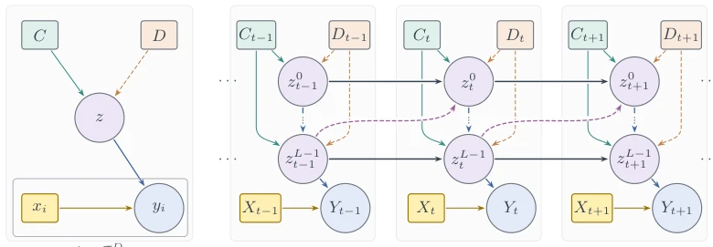
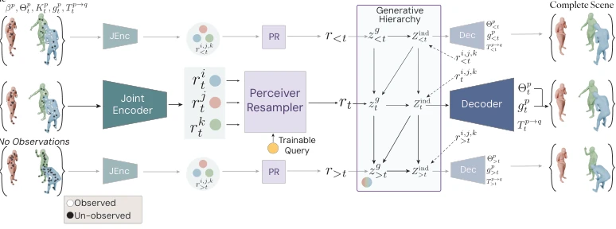
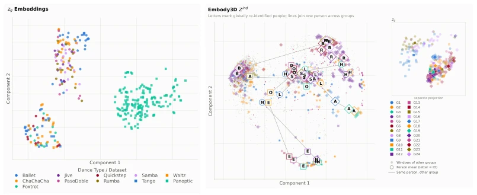
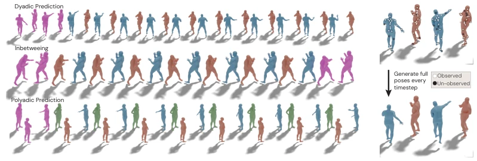
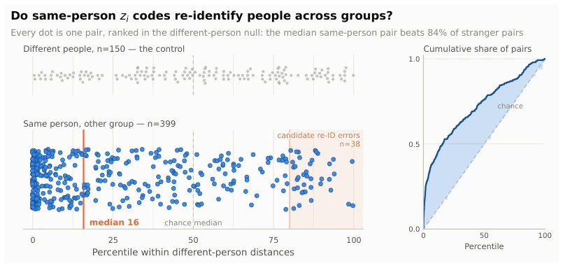
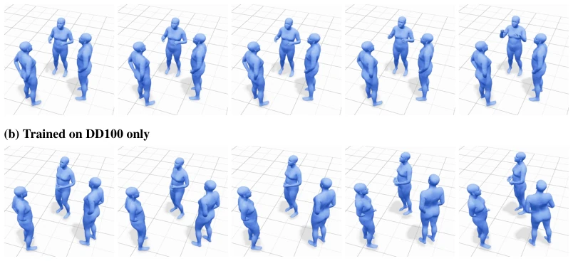
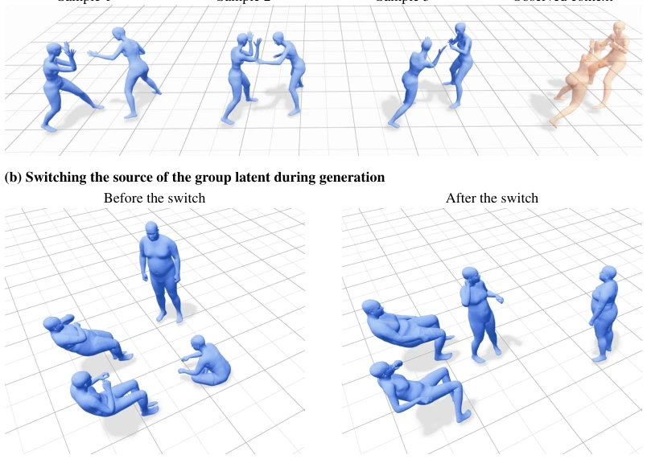

BRAID attempts to decouple social motion into 'group rhythm' and 'individual style' using dual-layer latent variables; this approach is theoretically quite compelling, after all, social interaction is not a single-player game. However, whether the so-called 'meta-transfer' can truly generalize in the face of real-world data fragmentation remains a question mark. Although it claims to handle partial observations, the error accumulation problem in long-sequence generation is not fully resolved. The advantage is the strong interpretability of the latent space, capable of clustering dance styles and identifying individuals, which is quite useful for downstream Agents, effectively adding a 'social state interface' to embodied intelligence's social perception.
研究动机Motivation
现有社交运动模型（如 Wang et al., 2021; Chew et al., 2025）往往只关注轨迹合理性，忽略了群体动态与个体行为的耦合。社交行为不是独立运动的集合，而是共同组织的过程（Sacks et al., 1974）。现有数据集（Joo et al., 2016; Mughal et al., 2024）覆盖有限，模型难以跨数据集、跨上下文迁移。需要显式的社会状态表示，而非隐式在去噪过程中。
Existing social motion models (e.g., Wang et al., 2021; Chew et al., 2025) often focus only on trajectory rationality, ignoring the coupling between group dynamics and individual behavior. Social behavior is not a collection of independent movements, but a co-organized process (Sacks et al., 1974). Existing datasets (Joo et al., 2016; Mughal et al., 2024) have limited coverage, making it difficult for models to transfer across datasets and contexts. There is a need for explicit social state representation, rather than implicit within the denoising process.

Figure 1: A generative model for multi-agent interaction. We propose Bilevel Representations for Agent Interaction Dynamics (BRAID), a unified model of multi-party group behaviour.

Figure 2: Neural Process and BRAID. C: observed context; D ⊇C: full target set; X: query inputs; Y : outputs. Dashed arrows denote inference-only dependencies.
BRAID adopts a hierarchical sequence latent variable architecture, the core of which is representing the scene as multi-layer hidden variables at time steps. The data flow starts with joint and root motion in SMPL-X format, compressed into group and individual context summaries via Joint Encoder and Perceiver Resampler. The generation model is factorized as $p(Y, Z_g, Z_{ind} | X, C)$, where Group Latent ($z_g$) is responsible for encoding shared interaction dynamics (e.g., rhythm, phase), while Person Latent ($z_p$) is conditioned on $z_g$ to encode individual behavior variations. This hierarchical structure mimics the cognitive science perspective that group coordination constrains individual action in social interaction. The inference stage introduces Precision-Weighted Posterior, fusing bottom-up data evidence with top-down prior distributions through precision weighting, thereby achieving smooth interpolation under sparse observations. The decoder partially freezes the pre-trained motion VAE, mapping latent variables to the VAE code space only through a trainable Adapter, ensuring the stability of short-term kinematic priors. The training objective includes ELBO and reconstruction losses such as joint rotation and root position, stabilizing hierarchical structure learning through hierarchical KL annealing.

Figure 3: High-level architectural view of the model. Illustration shows a interacting triad. On the left the model receives partial observations at various time steps and it generates the complete scene including each person p ∈{i, j, k}

Figure 7: Zind PCA embeddings of Embody3D with com- mon individuals across groups. Embeddings show the model latent space organising itself to cluster individuals.
Experiments cover multimodal datasets such as Haggling, DnD, DD100, DuoBox, Embody3D, with evaluation tasks including social prediction, completion, and partner prediction. Baseline comparisons include MAGNet, RoHM, Social Processes, etc. Evaluation metrics not only include traditional MPJPE but also emphasize social structure metrics such as SDTW and Cr. SDTW. Results show BRAID outperforms baselines in distribution fitting (FD) and diversity (DIV), especially in partial observation scenarios where FD is significantly reduced. Latent space analysis indicates $z_g$ can cluster by dance style (Fig 6), while $z_p$ can identify the same participant across groups (Fig 7, Fig 8). Additionally, the model retains group structure in cross-domain prediction, but long-sequence generation suffers from error accumulation, and diversity is low in static scenes.

Figure 4: Samples from BRAID for dyadic prediction, in-betweening, and polyadic prediction, spanning boxing and conversational interactions. Frames in Pink are given as input. Qualitative videos are in the Supplement.

Figure 8: The individual latent zi remembers who someone is, across different groups. Each person gets one zi vector per group they appear in. We measure the distance between two vectors of the same person seen in two different groups, and report it as a percentile of the distances between different people: percentile 20 means that pair is closer together than 80% of pairs of strangers. If zi carried no identity-related distance structure, the reference would be a uniform percentile distribution with median 50.

Figure 9: Cross-domain forecasting on a held-out Panoptic Haggling group, using frames from the supplementary videos. Both models observe the same 40 frames of conversational motion and generate the next 60. Context frames are rendered from each model’s own reconstruction, so the frame-40 panels differ slightly between rows. (a) The jointly trained model keeps a stable conversational formation while the central participant continues to gesture. (b) The DD100-only model, which never sees conversational data during training, also preserves plausible poses and a coherent conversational formation, indicating that it carries forward the group structure given in the context. However, the right-hand participant turns away from the group, a rotation characteristic of partnered dance rather than co

Figure 10: Qualitative probes of the latent hierarchy, using frames from the supplementary videos. (a) Three generated dyads (blue) share the same context (peach, right) and group latent but use different person-latent samples. (b) Selected states before and after changing the group-latent source; person latents are sampled conditionally on the active group state.